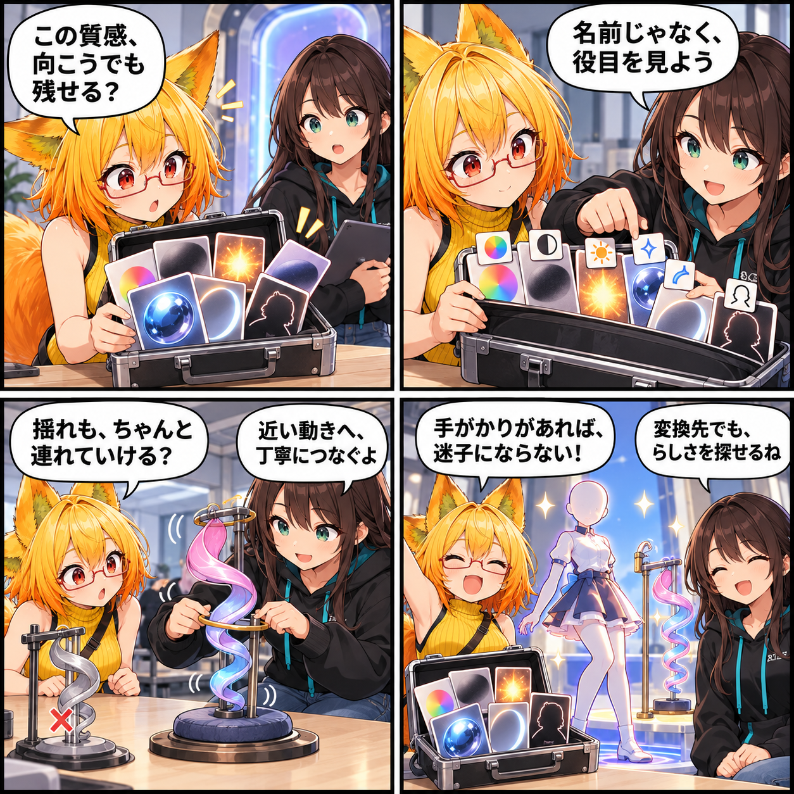

手がかりを、変換先へ渡す日
Converter 0.4.9で、古いToon系シェーダーが持つ質感の意味をViewer向けのsemanticへ整理して保存できるようにしました。BoingBonesの揺れも、既存の物理と重ならない範囲でLegacy DynamicBone互換の近似へつなぎます。

名前ではなく、描画の役目を見る
UnityChanToonShader 2.xとReflex Shader 2について、元のシェーダー名をそのまま動かすのではなく、Viewerで再構築できるlilToon semanticへ正規化する経路を追加しました。Base、Shadow、Normal、Emission、MatCap、Rim、Outlineに加え、AlphaやStencilなど、取得できる描画上の意味を変換時に扱います。
透明や輪郭も、状態として引き継ぐ
透明・Cutout・TransClippingのように表示結果へ影響する面の状態は、Render QueueやZWriteを含めて変換計画に反映します。lilToon Multi系の明示ZWriteも保持するようにしました。すべてのCustom Shaderを完全再現するものではなく、意味が同じでない項目は機械的な名前コピーではなく、安全な近似として扱います。
揺れの情報も、既存の物理とぶつけない
Boing KitのBoingBonesは、Chain単位でLegacy DynamicBone互換の物理へ近似変換できるようにしました。重力・減衰・弾性・剛性・Collision Radiusを共通の係数で正規化し、既にDynamicBoneが扱っている同じ階層とは重複しないようにします。Box形状など互換先に対応がないものを無理に置き換えるのではなく、対応できる範囲を明示して扱います。
ほかにも進んだこと
この期間には、VAB復元時の読み込み安定化とlilToon Multi状態の保持、PotaToonの顔方向・影参照の復元、Forward+環境でのアバター照明と髪の一貫性、VBG Studio Stateのpost effects schema 3読込修正なども進みました。期間内の8コミットは合計74ファイル、4,021行追加・148行削除です。
4コマの裏話
今回は、元の質感や揺れを「名前」ではなく変換先へ渡せる手がかりとして扱う話です。最後の一言は、完全な複製を約束せずとも、意味を確かめて近い表現へつなぐ今回の方針を表しています。
まとめ
Converter 0.4.9で、旧Toon系の描画意味をViewer向けsemanticへ正規化し、透明・輪郭・Stencilを含む取得可能な状態を変換に使えるようにしました。BoingBonesも既存物理との重複を避けながら、対応可能なChainをLegacy DynamicBone互換へ近似します。
本日のひとこと
手がかりが残れば、変換先でも「らしさ」を探せる。